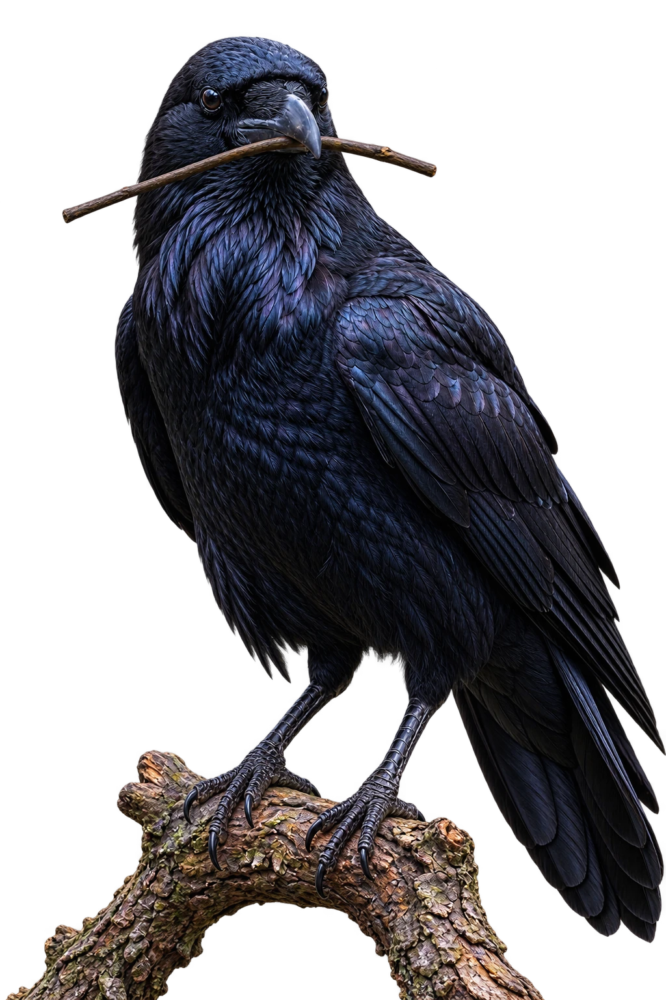
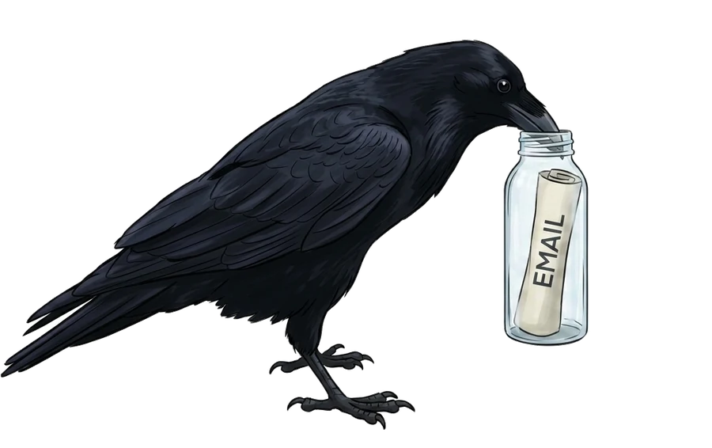
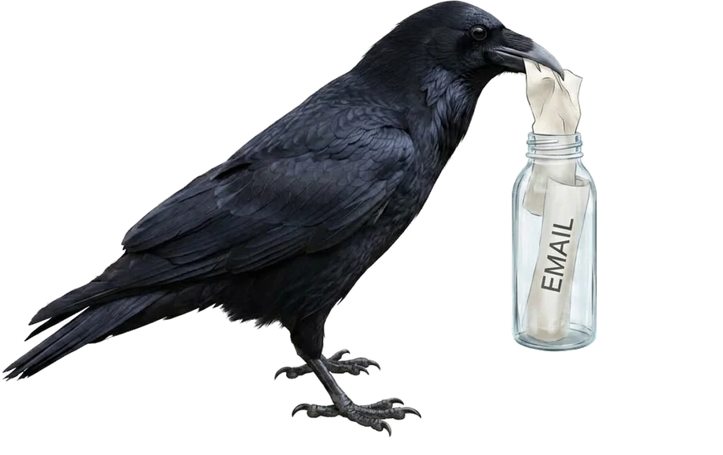
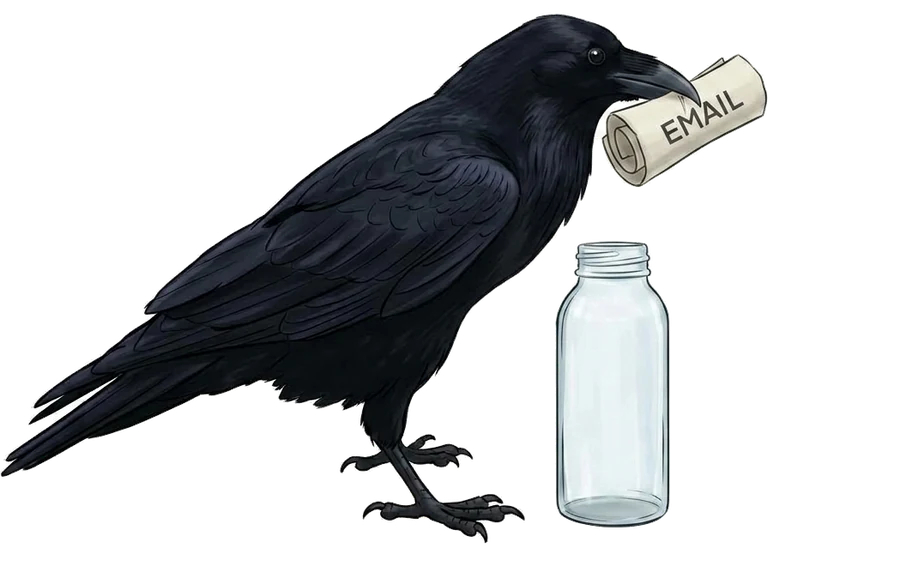
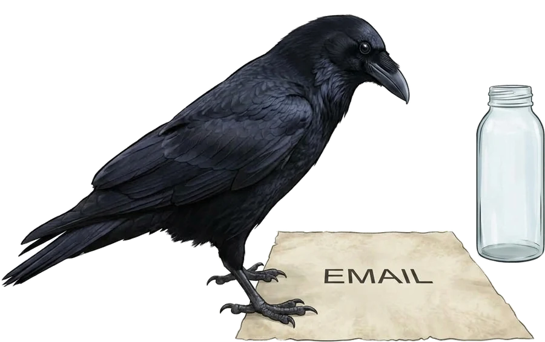

Where clever games take flight.
RAVYN Games is a small studio building sharp, strange, playable things. We take the long way round and it shows.
Scroll to open the nest

Small team.
Whole game.
No handoffs, no telephone. The people who design it are the people who build it and the people who answer for it.
Swipe to see more
- DirectionArt, systems and tone decided together, early.
- ProductionVertical slice first. Everything after that is proof.
- ReleaseWe ship, then we stay. Patches are part of the work.
Fourteen slots, filled with placeholders until the real thing lands. Hold the strip down and it runs.
Drag on touch · hold to skim on desktop



